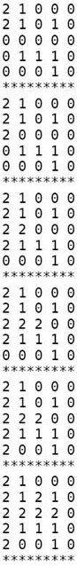

数据结构（Data Structure）是数据的组织方式。程序中用到的数据都不是孤立的，而是有相互联系的，根据访问数据的需求不同，同样的数据可以有多种不同的组织方式。以前学过的复合类型也可以看作数据的组织方式，把同一类型的数据组织成数组，或者把描述同一对象的各成员组织成结构体。数据的组织方式包含了存储方式和访问方式这两层意思，二者是紧密联系的。例如，数组的各元素是一个挨一个存储的，并且每个元素的大小相同，因此数组可以提供按下标访问的方式，结构体的各成员也是一个挨一个存储的，但是每个成员的大小不同，所以只能用.运算符加成员名来访问，而不能按下标访问。
本章主要介绍栈和队列这两种数据结构以及它们的应用。从本章的应用实例可以看出，一个问题中数据的存储方式和访问方式就决定了解决问题可以采用什么样的算法，要设计一个算法就要同时设计相应的数据结构来支持这种算法。所以Pascal语言的设计者Niklaus Wirth提出：算法+数据结构=程序（详见参考文献[20]）。
在第5.3节中我们已经对堆栈这种数据结构有了初步认识。堆栈是一组元素的集合，类似于数组，不同之处在于，数组可以按下标随机访问，这次访问a[5]下次可以访问a[1]，但是堆栈的访问规则被限制为Push和Pop两种操作，Push（入栈或压栈）向栈顶添加元素，Pop（出栈或弹出）则取出当前栈顶的元素，也就是说，只能访问栈顶元素而不能访问栈中其他元素。如果所有元素的类型相同，堆栈的存储也可以用数组来实现，访问操作可以通过函数接口提供。看以下的示例程序。
例12.1 用堆栈实现倒序打印
运行结果是cba。运行过程图示如图12.1所示。
图12.1 用堆栈实现倒序打印
数组stack是堆栈的存储空间，变量top总是保存数组中栈顶的下一个元素的下标，我们说“top总是指向栈顶的下一个元素”，或者把top叫做栈顶指针（Pointer）。在第11.2节中介绍了Loop Invariant的概念，可以用它检验循环的正确性，这里的“top总是指向栈顶的下一个元素”其实也是一种Invariant，Push和Pop操作总是维持这个条件不变，这种Invariant描述的对象是一个数据结构而不是一个循环，在DbC中称为Class Invariant。Pop操作的语义是取出栈顶元素，但上例的实现其实并没有清除原来的栈顶元素，只是把top指针移动了一下，原来的栈顶元素仍然存在那里，这就足够了，因为此后通过Push和Pop操作不可能再访问到已经取出的元素，下次Push操作就会覆盖它。putchar函数的作用是把一个字符打印到屏幕上，和printf的%c作用相同。布尔函数is_empty的作用是防止Pop操作访问越界。这里我们预留了足够大的栈空间（512个元素），其实严格来说Push操作之前也应该检查栈是否满了。
在main函数中，入栈的顺序是'a'、'b'、'c'，而出栈打印的顺序却是'c'、'b'、'a'，最后入栈的'c'最早出来，因此堆栈这种数据结构的特点可以概括为LIFO（Last In First Out，后进先出）。我们也可以写一个递归函数做倒序打印，利用函数调用的栈帧实现后进先出：
例12.2 用递归实现倒序打印
也许你会说，又是堆栈又是递归的，倒序打印一个数组犯得着这么大动干戈吗？写一个简单的循环不就行了：
对于数组来说确实没必要搞这么复杂，因为数组既可以从前向后访问也可以从后向前访问，甚至可以随机访问，但有些数据结构的访问并没有这么自由，下一节你就会看到这样的数据结构。
现在我们用堆栈解决一个有意思的问题，定义一个二维数组：
它表示一个迷宫，其中的1表示墙壁，0表示可以走的路，只能横着走或竖着走，不能斜着走，要求编程序找出从左上角到右下角的路线。程序如下：
例12.3 用深度优先搜索解迷宫问题
运行结果如下：
这次堆栈里的元素是结构体类型的，用来表示迷宫中一个点的X和Y坐标。我们用一个新的数据结构保存走迷宫的路线，每个走过的点都有一个前趋（Predecessor）点，表示是从哪儿走到当前点的，比如predecessor[4][4]是坐标为(3, 4)的点，就表示从(3, 4)走到了(4, 4)，一开始predecessor的各元素初始化为无效坐标(-1, -1)。在迷宫中探索路线的同时就把路线保存在predecessor数组中，已经走过的点在maze数组中记为2防止重复走，最后找到终点时就根据predecessor数组保存的路线从终点打印到起点。为了帮助理解，我把这个算法改写成伪代码（Pseudocode）如下：
我在while循环的末尾插了打印语句，每探索一步都打印出当前迷宫的状态（标记了哪些点），从打印结果可以看出这种搜索算法的特点是：每次探索完各个方向相邻的点之后，取其中一个相邻的点走下去，一直走到无路可走了再退回来，取另一个相邻的点再走下去。这称为深度优先搜索（DFS，Depth First Search）。探索迷宫和堆栈变化的过程如图12.2所示。
图12.2 深度优先搜索
图中各点的编号表示探索顺序，堆栈中保存的应该是坐标，我在画图时为了直观就把各点的编号写在堆栈里了。可见正是堆栈后进先出的性质使这个算法具有了深度优先的特点。如果在探索问题的解时走进了死胡同，则需要退回来从另一条路继续探索，这种思想称为回溯（Backtrack），一个典型的例子是很多编程书上都会讲的八皇后问题。
最后我们打印终点的坐标并通过predecessor数据结构找到它的前趋，这样顺藤摸瓜一直打印到起点。那么能不能从起点到终点正向打印路线呢？在上一节我们看到，数组支持随机访问也支持顺序访问，如果在一个循环里打印数组，既可以正向打印也可以反向打印。但predecessor这种数据结构却有很多限制：
1．不能随机访问一条路线上的任意点，只能通过一个点找到另一个点，通过另一个点再找第三个点，因此只能顺序访问。
2．每个点只知道它的前趋是谁，而不知道它的后继（Successor）是谁，所以只能反向顺序访问。
可见，有什么样的数据结构就决定了可以用什么样的算法。那为什么不再建一个successor数组来保存每个点的后继呢？从DFS算法的过程可以看出，虽然每个点的前趋只有一个，后继却不止一个，如果我们为每个点只保存一个后继，则无法保证这个后继指向正确的路线。由此可见，有什么样的算法就决定了可以用什么样的数据结构。设计算法和设计数据结构这两件工作是紧密联系的。
1．修改本节的程序，要求从起点到终点正向打印路线。你能想到几种办法？
2．本节程序中predecessor这个数据结构占用的存储空间太多了，改变它的存储方式可以节省空间，想想该怎么改。
3．上一节我们实现了一个基于堆栈的程序，然后改写成递归程序，用函数调用的栈帧替代自己实现的堆栈。本节的DFS算法也是基于堆栈的，请把它改写成递归程序，这样改写可以避免使用predecessor数据结构，想想该怎么做。
4．本节的程序只要找到一条路线就退出了，而不再回溯，如果要求找到从起点到终点的所有路线，想想该怎么做。
队列也是一组元素的集合，也提供两种基本操作：Enqueue（入队）将元素添加到队尾，Dequeue（出队）从队头取出元素并返回。就像排队买票一样，先来先服务，先入队的也是先出队的，这种方式称为FIFO（First In First Out，先进先出），有时候队列本身也被称为FIFO。
下面我们用队列解决迷宫问题。程序如下：
例12.4 用广度优先搜索解迷宫问题
运行结果如下：

其实仍然可以像例12.3一样用predecessor数组表示每个点的前趋，但我想换一种更方便的数据结构，直接在每个点的结构体中加一个成员表示前趋：
变量head和tail是队头和队尾指针，head总是指向队头，tail总是指向队尾的下一个元素。每个点的predecessor成员也是一个指针，指向它的前趋在queue数组中的位置，如图12.3所示。
图12.3 广度优先搜索的队列数据结构
为了帮助理解，我把这个算法改写成如下伪代码：
从打印的搜索过程可以看出，这个算法的特点是沿各个方向同时展开搜索，每个可以走通的方向轮流往前走一步，这称为广度优先搜索（BFS，Breadth First Search）。探索迷宫和队列变化的过程如图12.4所示。
图12.4 广度优先搜索
广度优先是一种步步为营的策略，每次都从各个方向探索一步，将前线推进一步，图12.4中的虚线就表示这个前线，队列中的元素总是由前线的点组成的，可见正是队列先进先出的性质使这个算法具有了广度优先的特点。广度优先搜索还有一个特点是可以找到从起点到终点的最短路径，而深度优先搜索找到的不一定是最短路径，比较本节和上一节程序的运行结果可以看出这一点，想一想为什么。
1．本节的例子直接在队列元素中加一个指针成员表示前趋，想一想为什么上一节的例12.3不能采用这种方法表示前趋？
2．本节例子中给队列分配的存储空间是512个元素，其实没必要这么多，那么解决这个问题至少要分配多少个元素的队列空间呢？跟什么因素有关？
比较例12.3的栈操作和例12.4的队列操作可以发现，栈操作的top指针在Push时增大而在Pop时减小，栈空间是可以重复利用的，而队列的head、tail指针都在一直增大，虽然前面的元素已经出队了，但它所占的存储空间却不能重复利用。在例12.4的解法中，出队的元素仍然有用，保存着走过的路径和每个点的前趋，但大多数程序并不是这样使用队列的，一般情况下出队的元素就不再有保存价值了，这些元素的存储空间应该回收利用，由此想到把队列改造成环形队列（Circular Queue）：把queue数组想象成一个圈，head和tail指针仍然是一直增大的，当指到数组末尾时就自动回到数组开头，就像两个人围着操场赛跑，沿着它们跑的方向看，从head到tail之间是队列的有效元素，从tail到head之间是空的存储位置，如果head追上tail就表示队列空了，如果tail追上head就表示队列的存储空间满了，如图12.5所示。
图12.5 环形队列
注意图12.5中的第三个小图和最后一个小图，“head和tail指向相同的位置”既可能表示“队列空”也可能表示“队列满”，这是肯定不行的，在实现环形队列时必须要区分这两种状态，请思考一下可以用哪些办法来区分。
1．现在把迷宫问题的要求改一下，只要求程序给出最后结论就可以了，回答“有路能到达终点”或者“没有路能到达终点”，而不需要把路径打印出来。请把例12.4改用环形队列实现，然后试验一下解决这个问题至少需要分配多少个元素的队列空间。
善于学习的人都应该善于总结。本书的编排顺序充分考虑到知识的前后依赖关系，保证在讲解每个新知识点的时候都只用到前面章节讲过的知识，但正因为如此，很多相互关联的知识点被拆散到多个章节中了。我们一章一章地纵向学习过来之后，应该理出几个横切面，把拆散到各章节中的知识点串起来。请从以下几个方面整理和复习。
1．C的语法规则
⦁ 源文件中所有函数定义之外可以出现哪些语法元素？
⦁ 函数定义之中可以出现哪些语法元素？
⦁ 语句有哪几种？
⦁ 哪些语法元素需要遵循标识符的命名规则？
⦁ 表达式由哪些语法元素组成？
⦁ 到目前为止学过哪些运算符？它们的优先级和结合性是怎样的？
⦁ 哪些运算符取操作数的左值？哪些运算符有Side Effect？
⦁ 哪些运算符的操作数必须是整型？哪些运算符的操作数必须是算术类型？哪些运算符的操作数必须是标量类型？
⦁ 哪些表达式可以做左值？哪些表达式只能做右值？
⦁ 哪些地方必须用常量表达式？哪些地方必须用整数常量表达式？
2．思维方法与编程思想
⦁ 以概念为中心，第1.1节
⦁ 组合规则，第2.5节
⦁ Least Surprise，第3.3节
⦁ 充分条件与必要条件，第3.4节
⦁ 封装，第4.2节
⦁ 布尔逻辑，第4.3节
⦁ 递归，第5.3节
⦁ 函数式编程，第6.1节
⦁ 迭代（第6章）与增量式求解（第11.2节）
⦁ 抽象，第7.2节
⦁ 避免硬编码，第8.2节
⦁ 数据驱动，第8.5节
⦁ 分而治之，第11.4节
⦁ 折半查找，第11.6节
⦁ 回溯，例12.3
3．调试方法
⦁ 编译错误、运行时错误与语义错误，第1.3节
⦁ 增量式开发，第5.2节
⦁ 打印语句与Scaffold，第5.2节
⦁ gdb，第10章
⦁ DbC与Assertion，第11.6节
注释
① 很不幸，Syntax和Grammar通常都翻译成“语法”，这让初学者非常混乱，Syntax的含义其实包含了Lexical和Grammar的规则，还包含一部分语义的规则（例如在C程序中变量应先声明后使用）。即使在英文的文献中Syntax和Grammar也经常混用，在有些文献中Syntax的含义不包括Lexical规则，只要注意上下文就不会误解。另外，本书在翻译容易引起混淆的时候通常直接用英文名称，例如Token没有十分好的翻译，直接用英文名称。
② “a.out”是“Assembler Output”的缩写，实际上一个C程序要先被编译器翻译成汇编程序，再被汇编器翻译成机器指令，最后还要经过链接器的处理才能成为可执行文件，详见第18.2节。
③ 读者可能会奇怪，为什么需要规定一个转义序列\?呢？因为C语言规定了一些三连符（Trigraph），在某些特殊的终端上缺少某些字符，需要用Trigraph输入，例如用??=表示#字符。Trigraph极不常用，极不常用的C语法在本书中通常不会介绍，介绍这个只是为了让读者理解转义序列的作用，即特殊字符转普通字符、普通字符转特殊字符，?号也是一种特殊字符，要表示其字面意思也需要用转义序列，但如果?号单独出现，不会被误认为是三连符，也可以不用转义序列。
④ 在纸上跑程序是每个初学编程的人都要练的一项基本功，你应该能自己算出程序的运行结果，从而对它的结果有一个预期，如果你自己都不知道这个程序该出什么结果，那交给计算机跑出来的结果是对是错你如何判断？
⑤ 空白字符在不同的上下文中有不同的含义，在C语言中空白字符定义为空格、水平Tab（\t）、垂直Tab（\v）、换行（\r和\n）和分页符（\f），本书在使用“空白字符”这个词时会明确说明在当前上下文中空白字符指的是哪些字符。
⑥ 敏锐的读者可能会发现一个矛盾：如果函数newline没有返回值，那么表达式newline()不就没有值了吗？然而上一章讲过任何表达式都有值和类型两个基本属性。其实这正是设计void这么一个关键字的原因：首先从语法上规定没有返回值的函数调用表达式是void类型的，有一个void类型的值，这样任何表达式都有值，不必考虑特殊情况，编译器的语法解析比较容易实现；然后从语义上规定void类型的表达式不能参与运算，因此newline()+1这样的表达式不能通过语义检查，从而兼顾了语法上的一致和语义上的不矛盾。在C语言中这个问题通过语义检查来解决，而在别的编程语言中又有不同的解决办法，比如Pascal语言从语法上区分有返回值和没有返回值的函数，有返回值的称为函数，没有返回值的称为过程（Procedure），在本书中函数和过程表示相同的含义。
⑦ 也许在你的机器上跑不出这个结果，因为你的编译器、操作系统、库函数的实现和我所用的不同，不过道理是类似的。
⑧ 但gcc的扩展特性允许嵌套定义函数，本书不做详细讨论。
⑨ C99也定义了专门的布尔类型_Bool，但目前没有被广泛使用。
⑩ 有的代码路径没有返回值的问题编译器是可以检查出来的，如果编译时加-Wall选项会报警告。
⑪ 例如很多编程书都会举例的汉诺塔问题，本书不打算再重复这个题目了。
⑫ 这两种写法在语义上稍有区别，详见第15.2.1节。
⑬ increment和decrement这两个词很有意思，大多数字典都说它们是名词，但经常被当成动词用，在计算机术语中，它们当动词用应该理解为increase by one和decrease by one。现代英语中很多原本是名词的都被当成动词用，字典都跟不上时代了，再比如transition也是如此。
⑭ C标准库函数setjmp和longjmp配合起来可以实现函数间的跳转，但只能从被调用的函数跳回到它的直接或间接调用者（同时从栈空间弹出一个或多个栈帧），而不能从一个函数跳转到另一个和它毫不相干的函数中。setjmp/longjmp函数主要也是用于出错处理，比如函数A调用函数B，函数B调用函数C，如果在C中出现某个错误条件，使得函数B和C继续执行下去都没有意义了，可以利用setjmp/longjmp机制快速返回到函数A做出错处理，本书不详细介绍这种机制，有兴趣的读者可查阅参考文献[31]的7.10节和10.15节。
⑮ 其实C99已经定义了复数类型_Complex。如果包含C标准库的头文件complex.h，也可以用complex做类型名。当然，只要不包含头文件complex.h就可以自己定义标识符complex，但为了尽量减少混淆，本章的示例代码都用complex_struct做标识符而不用complex。
⑯ 我们在第18.4节会看到，结构体成员之间也可能有若干个填充字节。
⑰ C99引入一种新的表达式语法Compound Literal可以用来赋值，例如z1 = (struct complex_struct){ 3.0, 4.0 };，本书不使用这种新语法。
⑱ 为了便于理解，第7.1节讲的Initializer语法并没有描述这种复杂的用法。
⑲ C99的新特性允许在数组长度表达式中使用变量，称为变长数组（Variable Length Array，VLA），VLA只能定义为局部变量而不能是全局变量，与VLA有关的语法规则比较复杂，本书不做详细介绍。
⑳ 你可能会想为什么编译器对这么明显的错误都视而不见？理由一，这种错误并不总是显而易见的，在第22章会讲到通过指针而不是数组名来访问数组的情况，指针指向数组中的什么位置只有运行时才知道，编译时无法检查是否越界，而运行时每次访问数组元素都检查越界会严重影响性能，所以干脆不检查了；理由二，参考文献[6]的第0章指出，C语言的设计精神是：相信每个C程序员都是高手，不要阻止程序员去干他们需要干的事，高手们使用count[-1]这种技巧其实并不少见，不应该当做错误。
㉑ 各种派生自UNIX的系统都把这个时刻称为Epoch，因为UNIX系统最早发明于1969年。
㉒ 这个语法的特殊之处在于，在这里字符串字面值和数组的用法并不相似，我们不能用一个数组给另一个数组初始化，却可以用一个字符串字面值给一个数组初始化。另一方面，我们不能把一个数组赋值给另一个数组，同样也不能把一个字符串字面值赋值给一个数组。这些特殊规定没什么道理可讲，一切都可归结于历史原因。
㉓ 大小写混合的命名方式是Modern C++风格所提倡的，在C++代码中很普遍，称为CamelCase），大概是因为有高有低像驼峰一样。
㉔ 本章这些示例程序的错误现象都和编译器、操作系统、库函数的实现有关，也许在你的系统上跑不出这样的结果，那也没关系，重要的是学会本章介绍的思想方法。另外你也可以尝试修改程序，总有办法得到类似的结果，上例中定义了一个很大的数组result[1000]，修改数组的大小就可能使运行结果有所不同。
㉕ 打印结果最左边的一长串数字是内存地址，在第16.1节详细解释，目前可以无视。
㉖ 受内存管理机制的影响，指令的执行时间不一定是常数，但执行时间的上界（Upper Bound）肯定是常数，我们这里假设语句的执行时间是常数只是一个粗略估计。